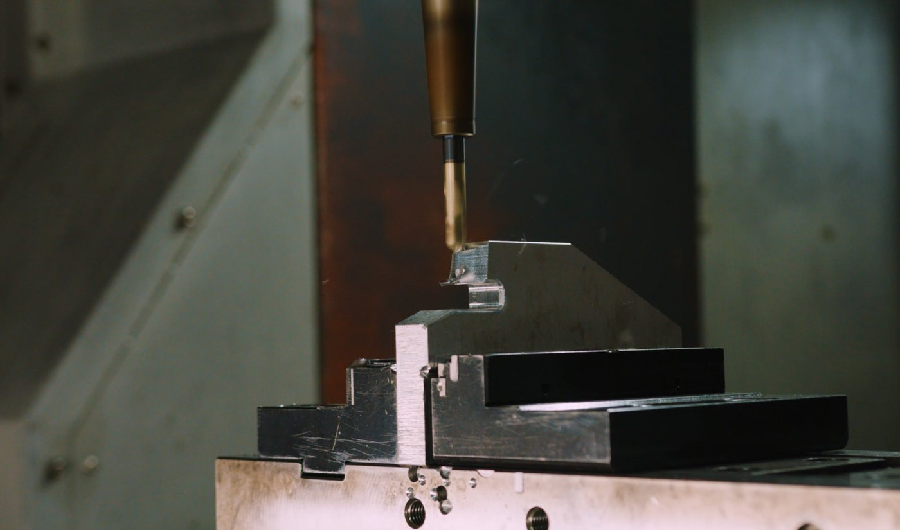
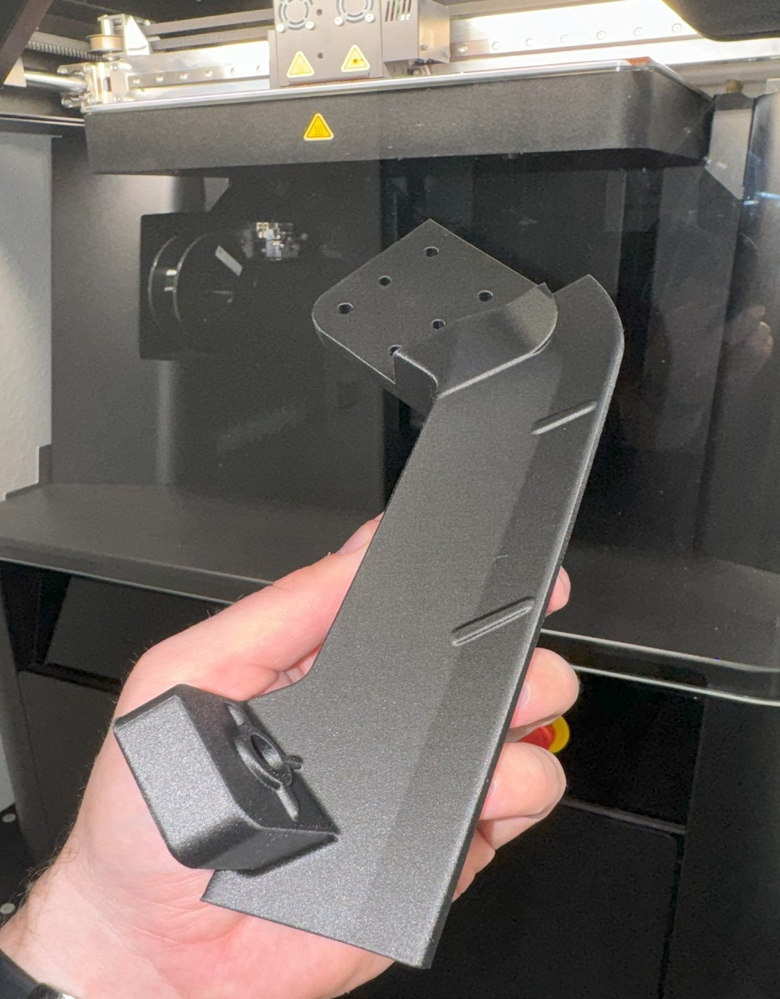
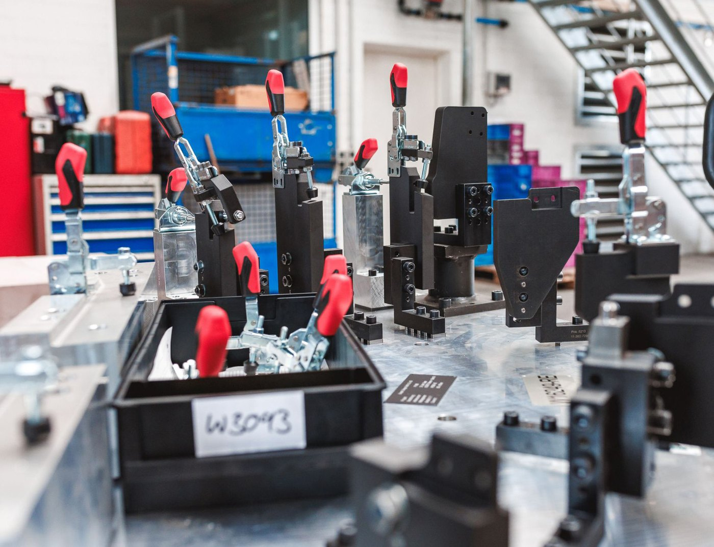
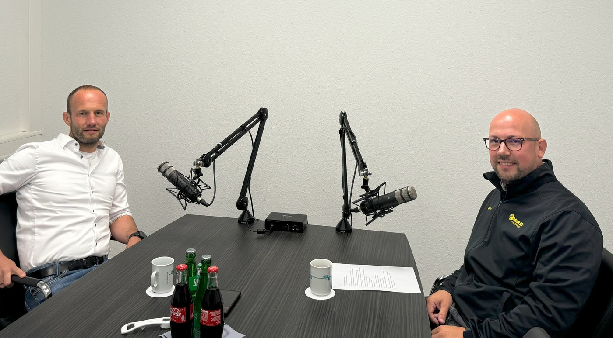
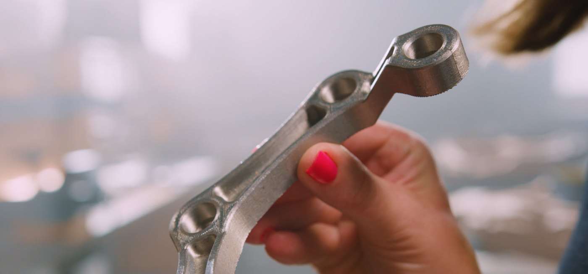

News & Insights

designed today, ready to assemble tomorrow
According to the customer story "WESCAD GmbH 3D Print Jigs and Fixtures" published by Mark3D, a Markforged reseller in Europe, WESCAD was the first customer from the industrial and mechanical engineering sector in Europe to invest in the Markforged FX10. Four weeks after the investment, its design department was printing end-use parts; after two months, its verdict was that the investment was "completely worth it".
"The overall package is perfect! It is extremely easy to use and works! We started in mid-June and with the FX10 we went from 0 to 100 and have 100% capacity utilization. We can't get any better than that."
Bernd Pille · Sales and Project Manager, WESCAD GmbH (from the Mark3D customer story)The challenge
Customers wanted tougher fixtures than laser sintering could give
WESCAD does more than build fixtures: it analyzes the customer's whole production process and picks the most suitable manufacturing method, previously laser sintering or milling. Recently, customer demand for mechanically resilient components has grown significantly, and the existing solutions could no longer fully meet it.
Bernd Pille, Sales and Project Manager, named four challenges. Laser-sintered components often lacked the necessary strength, and some fixtures failed under production loads. Design errors meant fixtures had to be remade by machining at great expense. There was no room in the hall for a new milling machine without expanding the building. And skilled machinists were hard to find, while the existing, fully utilized milling machines needed relief.

Adoption
Six months of outsourced prints before buying its own
Additive manufacturing was not new to WESCAD. It already used laser sintering and had spent six months buying printed fixtures from a service provider that also ran a Markforged machine, to test their stability and to familiarize customers with the technology. But it hesitated to buy its own printer, unsure whether it could keep the machine fully utilized.
The turning point came when Bernd Pille saw a Mark3D post on LinkedIn. After an initial consultation, WESCAD visited Mark3D to see the Markforged machines. The FX10 won them over with three things: a large build volume, modularity, and continuous carbon fiber printing. Four weeks after the investment the design department was printing end-use parts; after installation and a two-hour introduction, the printer was ready for use the same day.

"What convinced us? The quality, the precision, the support and an all-round worry-free package with software etc. No follow-up costs like with laser sintering. The ability to stop the manufacturing process and insert nuts or sensors was equally important to us!"
Dennis Bartusch · Production Manager, WESCAD GmbH (from the Mark3D customer story)Results
After two months: completely worth it
After two months, WESCAD concluded that the FX10 is more productive and more economical than mechanical manufacturing and causes no follow-up costs. It runs completely unmanned, with no set-up time and no additional personnel.
Accuracy holds on large parts. Large, complex components are made with greater precision and the same strength as aluminum; what used to be two or three milled parts is now a single piece, cutting material and assembly costs and taking work off the milling machines. The design department can print new fixture ideas straight away for internal testing or in-house production, which speeds up internal processes and frees people for more important work.
Part numbers are printed in. Serial numbers or component identifiers are designed into the model, where milled parts must be engraved by hand afterwards. Fixtures live in an integrated digital library and are printed on demand, overnight if needed, which lowers the error rate, shortens lead times and cuts storage costs, since damaged or worn parts can simply be reprinted. With far fewer process steps, WESCAD passes the savings directly to its customers and frees resources for other projects.

In the video
"We design it, send it to the printer, and the next day it's done"
In the testimonial video, Bernd Pille says the biggest concerns were that the parts would not be strong enough or accurate enough. What WESCAD needed was a material with the strength of aluminum, and that is the advantage of the Markforged printer. The printer was set up together with colleagues from Mark3D, the team was trained on site, and from that day it ran without problems, at 100% capacity ever since.
"Before we had the printer, all manufacturing parts were either milled or produced on our laser sintering system. What comes out of laser sintering is not comparable with metal; what comes out of our new printer is." Material procurement, NC programming and milling now all happen in the design stage, he says, and the printed part arrives ready to assemble.
"In the end, there is a tremendous increase in efficiency. We have reference products and reference fixtures that we manufactured up to 75% cheaper than if we had made them with milled parts."

Next
More printed parts in production, and metal under evaluation
WESCAD placed the FX10 directly in its design department. Parts printed on it have replaced numerous fixtures previously made from aluminum alloy, and despite initial concerns the printer has run smoothly around the clock at 100% capacity from the start. Next, WESCAD plans to bring more printed parts such as clamping arms and special parts into production, to optimize processes and cut costs for its customers and itself.
At the end of August 2024, Markforged added metal printing to the FX10. WESCAD plans to invest in the new capability and is currently examining use cases intensively.

Assess fixture production on the FX10
Tell us about your fixtures and lead-time needs. Markforged engineers will assess materials and printers against your actual parts and can arrange a demonstration in Taiwan, mainland China, Hong Kong or Vietnam.
Contact usSources
- Mark3D (Markforged reseller in Europe) customer story: WESCAD GmbH 3D Print Jigs and Fixtures (2025-02-27). Figures and quotes from the English case study PDF attached to that page
https://www.mark3d.com/en/wescad-gmbh-3d-print-jigs-fixtures/ - Mark3D case study PDF (A4 · 12 pages)
https://www.mark3d.com/en/wp-content/uploads/sites/6/2025/02/Case_Study_WESCAD_en.pdf - Customer testimonial video on Mark3D's YouTube channel (German audio, English subtitles). The "up to 75% cheaper" figure is what the interviewee says in the video
https://www.youtube.com/watch?v=ZtcmDOhn-bM - Images: Mark3D customer story
Compiled by the Markforged Greater China & Vietnam team.
Back to the Media Hub · www.markforged.tw